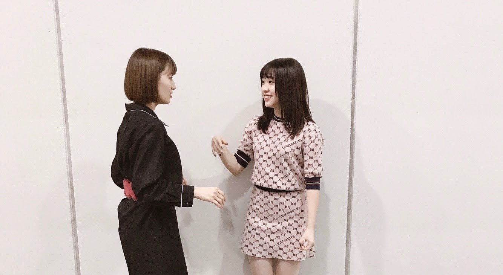
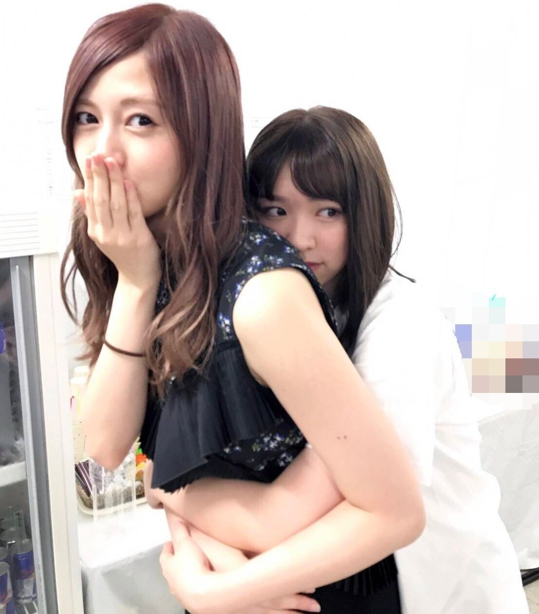
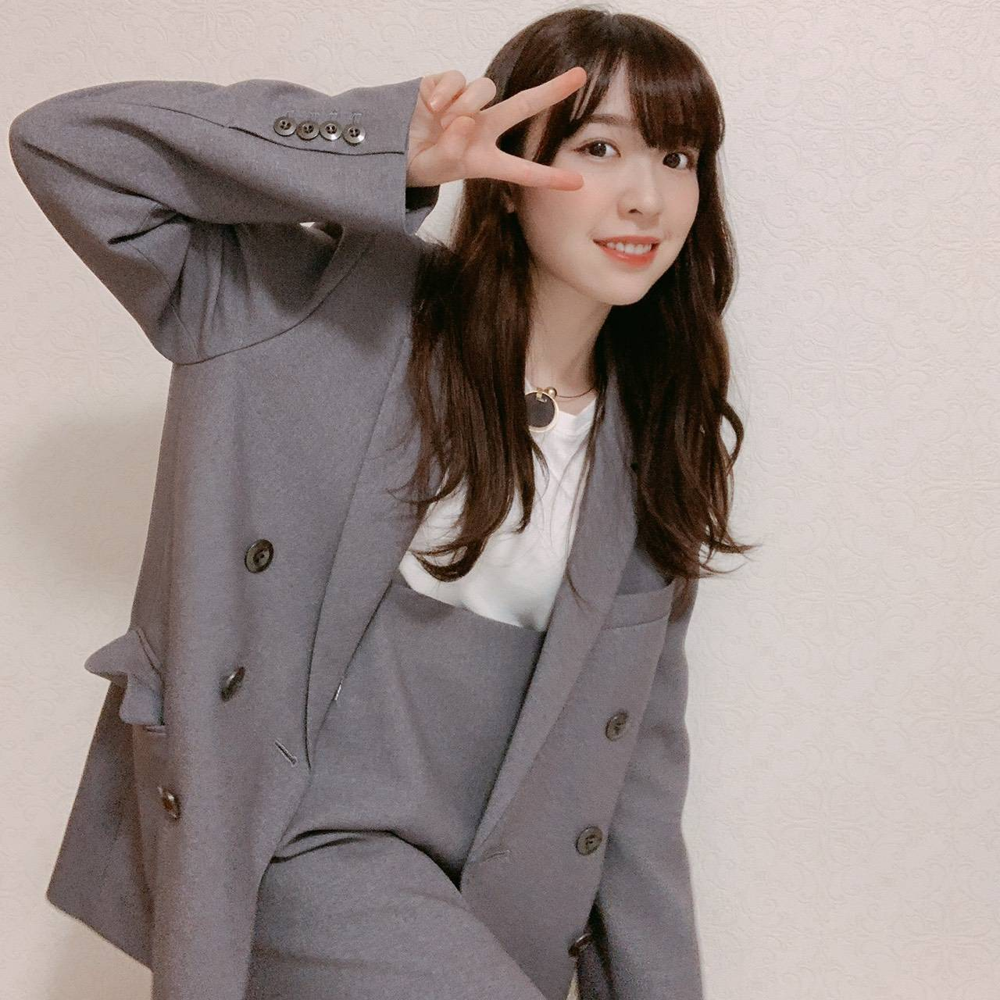
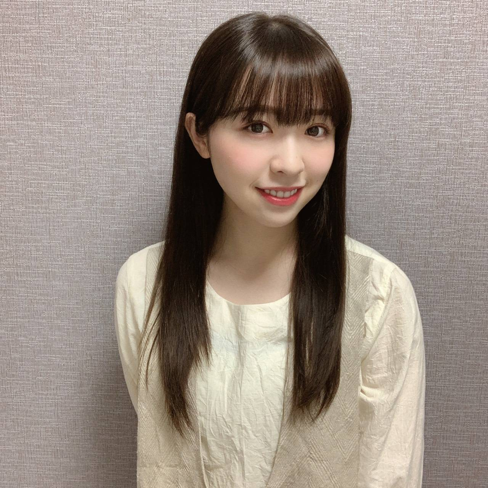
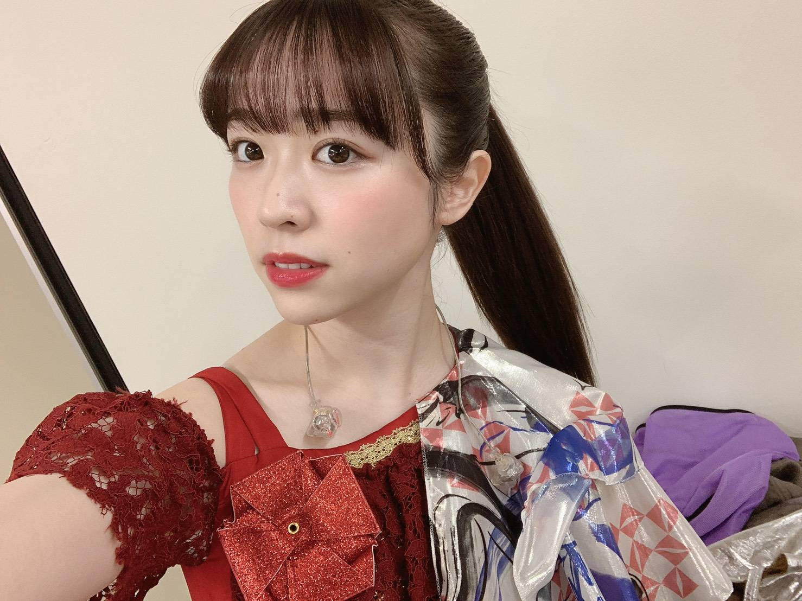

2020/1101Sun21の記憶
花奈さん、白石さん
ご卒業おめでとうございます。
そして本当にお疲れ様でした！

2018年の握手会

2017年の夏、懐かしい、笑
お二人は私にとって大切なお姉ちゃん
8年間共に乃木坂46として歩めたことを
とても誇りに思います。
ああ、大好きー、寂しいーー。
色々な思い出があるけど秘めておきたい。
私の心の中に大切にしまっておきます
大好きで尊敬するお姉ちゃん達、
本当にお疲れ様でした。

そして、今日で21歳になりました！
まちこちゃんに(ひなちまの事ね)
「みり愛って今19歳だっけ？」
って言われるくらいに
メンバーやファンの方からしたら
21歳は驚かれる年齢となりました、笑
13歳で乃木坂46に入り、
そして今8年目に突入しています。
いつも変わらず応援して下さる皆様
ありがとうございます。
私ってたぶん乃木坂の中で1番
普通の子、何も特徴がないし
これといった趣味もない
だからと言って不得意な事もない
アイドルらしいとは言い難い女の子。
それなのにファンの皆様は
いつだって私を見てくれています
沢山の期待を持ってくれています
私を乃木坂46として、ステージで
きらきら輝けるように支えてくださっています
本当に嬉しいんです、ありがとう。
そして乃木坂46が本当に大好き！
21歳も少しでも皆様の期待に
応えられるよう努力は変えず
頑張って参ります！

そんな本日は
オンラインミート&グリートでした！
誕生日の日に皆さんとお話が出来て
私はとても嬉しいです
私に見せるために
わざわざケーキを買ってきてくれたり
部屋に飾り付けをしてくれたり
仮装して笑わせてくれたり
用意したお手紙を読んでくれたり
「みり愛のファンは本当に楽しそうで
面白いね」とマネージャーさんに
言われるほど。笑
私は改めて幸せ者だなあと感じました。
皆さんは私に力を貰ってるよ！と
言って下さるけれど
それは私も同じです！凄くジーンと
心にくる新しい生誕祭のような感じでした。
本当に本当にありがとう。

みり愛
コメント(898)
初日参戦しました。
みり愛のパフォーマンスを観れて本当に嬉しいかったです！
ライブが観れるって本当に嬉しいですね。
本当にありがとうございました！
三日間本当にお疲れさま！
14人のメンバーがノンストップで繰り出すアンダーのステージ、まさに圧巻だったよ！
今日は俯瞰出来る位置で観ていたため、揃ったフリやフォーメーションもわかり、アンダーメンバーの実力に感心することしきりだったよー！
高めポニーテールで踊るみり愛ちゃんは可愛くて、綺麗なところは綺麗に、強いところは強くと、みり愛ちゃんのダンスめっちゃ良かったー！
みり愛ちゃんの歌声も素敵だった！
そして遠くからでもみり愛ちゃんのお肌は桁違いに白いので本当にすぐみつけられた！
2021年の目標、是非、臆せずに自分を表現していってね！
本当にまたこうやってライブを観られるときがくるんだろうか？と思っていただけに、このような難しい状況のなかでもライブの実現に尽力してくださった運営スタッフやライブ関係者の方々、そしてメンバーのみんなには本当に感謝しかありません。
また違ったライブの楽しみかたもみつけられたし、同時に配信という形で沢山の人も観られたというのも嬉しい限りでした。
素敵なライブを本当にありがとうございました。
けっこう前から知っているよ♪
乃木中やその他のお仕事の様子を見ていて、みり愛ちゃん、そうなんだろうなぁーって感じていたよ。
箱推しのファンはメンバーみんなのことを、推しメンがいるファンは推しのことをよく見ているものだよ。
いろいろ表現できるといいね
アンダラ2020千秋楽を現地でみましたよ！
アリーナA9で見てたのですが仕事の関係で1時間ほど遅れて「その女」のラスサビ辺りで会場入りしたので「風船」を見ることは出来なかったのですが、「君が扇いでくれた」では光がみり愛を1点で照らしていていてステージを舞う姿に目が奪われましたし、生で見て綺麗で踊っている姿も美しくて素敵でした！「風船」とは違ってあまり披露されない曲だと思うから見れてよかったです。8thバスラ以来にみり愛の生の姿を目にすることが出来て良かったし、みり愛のダンスも表現力も目に留まるものがありました。ポニーテールもとても似合ってましたし激しめの曲ではすごく靡かせながら踊っていて見ていて凄かったです。
アフター配信でのれなちと仲良くしている姿も見ていて微笑ましかったですし 見ていて楽しそうにしてたからこちらまで楽しく見させていただきました！
みり愛の涙を見るのはあまり無いことだから驚きましたが、みり愛の話してくれた言葉の一つ一つが心に刺さり、みり愛の口からそういう言葉を聞くことも無いことだと思うから何だか分からないけど話してくださってありがとうと思いました。
普段はわちゃわちゃしているのに、ステージに立つと雰囲気もガラッと変わって表情も凛々しくなるのがとても格好良くて、人に誤解されることは辛いことだと本当に思いますし、自分も人見知りなので痛いほど分かります。みり愛の話してくれた言葉は決して忘れません。本当に話してくれてありがとう！みり愛の言葉を聞いて自分も涙が出てくるといいますか、みり愛が心の中で思っていることをあの武道館という場所で話してくれた事が凄いことだし、涙を流しながらも伝えられる勇気に尊敬しかないです。
改めてみり愛推しでこれからも応援したいと強く思いました。
最高の推しですし、人としてもアイドルとしてもみり愛は最高の人だと思います。みり愛の歌声もダンスもわちゃわちゃ姿も号泣する姿も色々な姿を目に焼き付けられて良かったです！
ノンストップライブは昔のアンダラ3rdを思い出させてくれる気持ちになって乗り越えたことも凄いし、3日間本当にお疲れ様！
みり愛は最高のアイドルです！
アンダーライブ最終日、お疲れ様でしたー。
アンダー楽曲の一気演奏、すごいですね。
いつも思うけど、あっという間にっていう感じです。
みり愛ちゃんをたくさん見れたし。
良い楽曲ばかりですね。
みり愛ちゃんの涙に、もらい泣きです。
でも、毎年のようにあったライブが
今年は、延期、中止となって、
そんな中で、規制をしてですが、
開催出来たのは良かったですよね。
パフォーマンス見せてくれてありがとうです。
ダンスも歌声も素敵でした。
来年は目標にした『表現』するを意識して
頑張って下さいね。
まだ、ライブ開催の状況は、厳しそうですけど、
応援してますよー。
いつもブログ、モバメありがとうです。
元気もらってます。
みり愛ちゃんビームは、たかお君的にはでんちゃんとツードップやねん。
グフっ、最後のみり愛ちゃんの涙、こちらも、感情移入して泣きました。
アンダー楽曲の全曲披露って名曲揃い。歌詞もやけど、メンバー皆がキラキラしてて、ぞの中にも、闘争心の炎が燃えてて、とっても素敵やったよ。
来年も、まだまだコロナ禍で大変な状況が続いていくやろけど、ミーグリとか、ライブ配信は、まさに時代が生んだ、究極のツールやと思います。
配信でしたが3日間見届けました！
推しの雄姿を全日見届けられて、2020年は幸せに終われそうです！
まさか1、2日目のノンストップ10曲が前フリで、最終日に繋げて本編ノンストップでやり遂げてしまうとは驚きました！
3rdか4thあたりのアンダラは参戦した事がなかったので、ノンストップが圧巻で！
演出を止めずにメンバーや衣装が入れ替わっていて、並の特効なんかより、よりライブらしいライブでアンダラの真骨頂を正々堂々と正面から殴りつけられた感じです！
まだ終盤が見えないあたりで”日常”を入れてきて、体力持つ！？と思いながら立て続けに続くダンスナンバーには圧巻でした！
ハードな終盤だった武蔵野の森と全曲披露の幕張2019に、さらにノンストップを組み合わせるセトリとはいやはや参りました！
それでいて、さり気なく全員センター企画も兼ねつつ全員で攻める感じ、曲でセンターを変えていく乃木坂らしさも感じました！
ちなみに、全日にわたってソロまたはペアの歌唱シーンが多かったので、個人的にはみり愛さんの歌声かよく聞こえたのが嬉しかったですよ(^^)
その中で、最終日の”君が扇いでくれた”は、何でしょう、凄く気持ちがこもっているのを感じました
特にアウトロのソロダンス、なんだか震えちゃいました
ラスト、みり愛さんが自分の感情で涙するってあまりなかった気がするので、それを見て、コロナの影響で今年は思うようにパフォーマンスできなかった事にそこまで強い思いを抱いてたとはつゆ知らず、なんだか申し訳なかったな、と
ずっとライブをしたいとモバメ送ってくれていましたもんね
こんなご時世であろうとも、みり愛さん推しはみんな、活躍を見てますよ！
年末でまだ少しお忙しいとは思いますが、体調に気を付けてくださいね！
お疲れさまでした！
スイートポテト‼うまぺろんぬそうだぷーq(T▽Tq)(pT▽T)p
乃木坂工事中‼2020☆視聴いたしました。時々渡辺殿発見ﾜﾝ (･x･U)≡≡≡３ コール渡辺殿ナイス[岩蔭|](ｴ)￣)
お洋服コーデ救われるトーク感動ぽっぽぽー壁]ω･U ﾆｬ♡
アンダラ3日間お疲れ様でした!!
最終日は特に恐怖のセトリ笑
大変だったと思います
とにかく
本当に幸せな3日間でした
メンバーの皆さんに感謝
運営、スタッフの皆さんに感謝
そして何より
みり愛ちゃんに感謝です
閉塞感に満ちた
退屈な日常に
光を与えてくれたひとときでした
本当にありがとう
まずはしっかり身体を休めてくださいね
そしてまた
素敵な笑顔と
ちょっぴり毒のあるユーモアを聴かせてください
それではー
今までもずっと思ってたんだけど、みり愛のパフォーマンス中の移動の歩き方がめちゃくちゃ好き！
あとね、アンダラの前日のれなちのラジオで指原莉乃さんがアイドルに大切なこと？みたいなお話してたんだけど、ライブでの歌とダンスを頑張れる子は素敵だと思うって言っててみり愛のことが思い浮かんだ！
アンダラ見ても感じたけどみり愛はすごくライブを大切にしてるからとってもその言葉が響いたからみり愛にも伝えたかった！！
最高のライブだったと思います！
ライブのみり愛ちゃんは本当に輝いていました！
忙しいかもしれないけど、休めるときは休んでください！
アンダーライブ3日間、お疲れ様でした(^^)
ポニテ似合ってたよ〜最近よくポニテしてるね！髪の毛もアンダラ仕様の赤色にしたんだね！似合ってたよ〜
お家でみり愛のペンライト振ってたくさん応援してたよ！
3日目のみりちゃんの涙みて、ライブにかける想いが伝わってきたよ。普段は泣かないからメンバーもびっくりしていたし、私もびっくりしたけど、そうやって感情が表に出せたこと、みり愛の成長に繋がっている気がするなぁ。そう、今回の涙こそみり愛にとっての来年で言ってた｢表現｣に表れてたよ！みり愛は表現を磨きたいんだよね！？
もう十分磨かれてると思っちゃう私は甘々なのかな？笑
今回のアンダラの3日目はノンストップで本当に大変だったと思うけどよく頑張ったね！みり愛がアンコールの命のダンスちょっと苦しそうだなって思った笑 でもそれだけ本気で踊ってるのも感じられたよ！笑
あとね！嫉妬の権利の誰と一緒にいるのか知りたくなるのところのみり愛がすごく良かったよ〜手の動きもしなやかでほんとに好きだった(^^)個人的には最後の方の衣装？アンダラ衣装なのかな？パンツ衣装で胸元にキラキラみたいなのついてるの。あの衣装ね、すごく好みだった(^^)
あとはね、もちろん風船はやっぱり白色にしたよ！
愛は強い丈夫なんだよのところのソロがすごく力強く感じたよ！ちゃんと現地で聴きたかったな笑
さっきも言ったけど来年の抱負である｢表現｣にみり愛のたくさんの想いが詰まってるなと感じたよ。日経エンタテインメントのインタビューでみり愛が私イコールダンスという印象になってるって言ってて確かにダンスというイメージは強いから色々なところで自分をしっかりと出せるくらい表現してほしいなって思ったよ。でも今回のみりちゃんの涙はみりちゃんの想いが表現に表れてたと思うし、それでもみりちゃんは自分を磨いてくんだろうな！より来年のみりちゃんが楽しみになったよー！(^^)
みり愛の踊って歌って輝くすがたをみて私ももっと頑張ろうと刺激を貰えたライブの素敵な時間でした。ありがとう(^^)♡
会えないけどこんなコメントでちょっとでも私の気持ちが伝わっているといいなって思う、、長いよね、笑
そうそう、みりちゃん呼びは私だけだと思ってたけど、アンダラでメンバーも呼んでてびっくりしちゃったよ！？笑
3日間、本当にお疲れ様でした(^^)
これからも私はずっとみりちゃんを応援します！
だいすきです
まこうさぎ(まこぺんより)
素敵なパフォーマンスだったよ！ 最終日の涙は、やっと観客入りのライブができたことの嬉しさや自分の存在の意味を確認できたからかな。滅多に泣かないみり愛ちゃんの美しい涙、もらい泣きしちゃったよ
次は、2期生ライブと未央奈卒業ライブができたらいいね(^^)d
じゃあまたね(^-^)/
アンダーライブ3公演お疲れ様でした！
今はどんな心境なのかな？
ライブの余韻に浸ってる暇はないのかな？
今回は3公演とも配信で観させていただきました(^^)
久しぶりのアンダーライブ、現地で観たかったのですが
こればっかりは仕方ないですね…
それにしても３日間本当に楽しませて頂きました！
みり愛ちゃんはじめメンバーの皆さん、スタッフさん
色々なご苦労があったと思いますが
無事完走する事が出来て良かったですね〜
ライブ中のみり愛ちゃんは
本当に可愛くてカッコよくて輝いてました！
センター曲は勿論、ユニット曲、他の曲も全部
みり愛ちゃんにずっと見惚れてましたよ〜
アフター配信でのわちゃわちゃも可愛くて最高でした！
そして最終日の涙にはこちらも貰い泣きしてしまいました…
普段あまり本音や弱音を吐かないタイプ(と勝手に思ってます)
だけど、振り返ると節目になりそうな時、感情が溢れたのか
涙を流している姿を見る事が何度かありました。
今回はセラミュや46時間のダンスの時とは
違う涙かもしれませんが、また節目となるのでしょうか。
と、勝手な感想を書いてしまいましたが、
もう今年もあと10日ですね！
年末、これからもお忙しいかと思いますが
お体を大切に楽しく充実した活動が出来るよう願ってます(^^)
今年は結局1度もお会いする事無く
お話する事も無く終わってしまいますが
1月には少しですがお話する事が出来そうです！
今から凄く凄く楽しみです！
出来れば来年中には直接お会いする機会があれば
いいなぁと思ってますが、どうなるんでしょうか。
ではまた、コメントしに来ますね(^^)
アンダーライブ3日間お疲れ様！！
俺は3日目だけ配信で観たんだけど、めっちゃ楽しかった！
ノンストップで29曲披露は練習の段階から大変だったと思うし、当日のみんなの息切れ具合を観てて本当に感動した！
改めてアンダー曲は素敵な曲ばかりだなって感じた！
みり愛ちゃんがソロで歌うところも結構あって、歌声たくさん聴けて嬉しかった！
ダンスもかっこよかった！
みり愛ちゃんの涙につられて俺も泣きそうになった〜
それだけアンダーライブにかける想いの強さが伝わってきたし、改めて色んな人の協力でこのライブが実現出来て本当に良かった！
3日間本当にお疲れ様！！
ゆっくり休んでね！
またコメントするね〜
今回は配信のおかげで3日間すべて見届けることができました
本当にありがたかったです
これぞアンダラ！という素晴らしいパフォーマンス
これが乃木坂の底力、強さだと思います
3期ちゃんたちのダンスが大きくなったのは
きっとみり愛ちゃんというお手本が
そばにいるからというのも大きいと思います
まずはゆっくり身体を休めてくださいね
可愛い＆カッコイイ、みり愛ちゃん
いつもありがとう!!
怒涛のアンダーライブ三日間
改めて、みり愛ちゃん本当にお疲れさま！
３日通して覚えることは膨大な量にのぼったろうし、特に最終日など、衣装をチェンジしながらノンストップで繰り広げるステージは圧巻だったな！
体力的にもそうとうだったと思うけど、そんな中統率の取れたフォーメーションや１人ひとりの見せ方など、本当に乃木坂46の凄さを感じたよー！
そして普段は柔らかそうな雰囲気のみり愛ちゃんだけど、ステージでのパフォーマンスになると、俄然ブーストかかって輝きを放つのが本当に凄かったよ☺️
風船になると毎度楽しい気分になるし、君が扇いでくれたのみり愛ちゃんの佇まいも印象的だったよー！
みり愛ちゃん、三日間本当にお疲れさま！
本当に寒さも厳しくなってきたけど、休めるときは休んでね！
みり愛ちゃんと乃木坂の皆が無事にライブを駆け抜けることが出来て本当に良かった！
ライブ最高だったよ！！
３日目を配信で観せていただきました。
全アンダー曲をノンストップでやるなんてなかなか大変だったね。
でもアンダー版バスラみたいですごく楽しかった。
アンコールで振りの激しい「命は美しい」を歌ったのはキツそうだったけど、七瀬推しだった僕はすごく嬉しかった。アンコールで命ってなかなかない選曲。
次のライブはバスラになるのかな？現状どうなるのかわからないけどまたいいライブを期待してます。
「口ほどにもないKISS」はアンダーでは久しぶりに明るめな曲だね。ソロパートが多いのがいい。
(笑)を歌詞にするって(笑)
MVも楽しみだなぁ
チャァオ〜〜〜!☆彡
みりちゃま、年末で忙しい〜〜でしょ〜〜〜⤴️⤴️❕❤️❤️❤️❤️❤️笑顔
風邪ひかないように、頑張ってねぇ〜〜⤴️⤴️⤴️❕❤️❤️❤️❤️❤️笑顔
(＠＾▽゜＠）ゞ❤️❤️❤️
短い短いブログでもOKだから〜〜楽しみに待っているよおお〜〜⤴️⤴️⤴️❕❤️❤️❤️❤️❤️笑顔
(寒い夜〜リズちゃんに毛布を掛けて〜あたたかくしてる〜〜❔❤️❤️❤️)
(＠＾▽゜＠）ゞ❤️❤️❤️
❇️❇️おすまし！⚜️❇️⭐彡
千秋楽しか参加できてないけどみりあのパフォーマンスも
しっかり見れたしほんまに楽しい時間やったよ ありがとう！
乃木坂46好きでアンダー好きでよかった！！！
どうも、どうも、こんばんはm(_ _)m
ライブお疲れ様でした。
いつの日か、いや、近いうちに、生でライブを観たいものです。
ちなみに、今は、洗濯物してます。
さて、冒頭で述べました通り、
わたし、ひどく、嫉妬しています。
聞いて頂けますか？
そうですか、そうですか、そうきましたかー
では、聞いて頂きましょう、そうしましょう。
みりあ氏は、乃木中の放送観てますか？
わたしは、ほぼ毎週観ているんですが、特に近年のアレには嫉妬させられているんです。
軽快な効果音と共に現れる画面下のテロップ。
こういうのは、一度気になりだすと、気になってしょうがないわけで。もちろん良い意味で。
きっと乃木坂を知り尽くした方がテロップを考えているのでしょう。
余計なお世話でしょうが、日に日にギャグセンスが高まっているようにも感じられます。
主役、盛り上げ役、縁の下の力もち。三位一体とはこういうことをいうのだろうね。ありがたいかぎりですm(_ _)m
数年ぶりにみり愛がステージに立っている姿を見たけれど頼もしくなりましたね^^
自分の知っているみり愛より自信があるように見えました。
そして、｢表現｣
以前は求められてきたことに応えていたように思えましたが、これからは"自信"を自分の核として持ち、その"自信"を胸に自分の色を他人に良いなと思ってもらえるよう活動していって欲しいです。
あなたの持っている色はどれも素敵で、彩やかで、美しいものです。
そしてその1歩を｢君が仰いでくれた｣｢風船は生きている｣で見られたのをとても嬉しく思います。
私の我儘ですが、みり愛の｢表現｣が一つの作品として完成した楽曲を見られることを楽しみにしています。
陰ながらではありますが、いつも応援しているのでこれからも頑張ってください。
風の噂だったりいろいろなところであなたの頑張りを聞けて自分も頑張れています。
そう遠くない日にお会いできることを楽しみにしています。
今はシャワーを浴びてました
夕飯はすき焼きでした
もうすぐクリスマスですね
今、自分はたまたま実家にいるのですが、ツリーは出してませんね(笑)
昔は飾ってました
サンタも来てたなぁ(笑)
お鍋 に 集中？！
眉渡辺殿きゃわわうれぴーぽーo(￣◎￣)o ﾊﾞﾌﾞｩ♡
君が扇いでくれた♡渡辺殿‼ぷらーばですわおほほほほ(o^∀^)
ほんじつもホットココアパワー100万馬力でばいころまる( ;-(ｴ)-)ゞｸﾏ
みり愛の特権お裾分けを～笑
じゃあね。
ショック。
お家でチキン＆シチュー食べて美味しかったかな？
アンダーライブは二日目を配信で参加したよぉ～(^o^)
今までチケットとれたことなくて、今回が初めてなんだけど、最高に楽しかったよぉ～
特にバスラ以来の「風船は生きている」はめっちゃ良かったよぉ～ヽ(^0^)ﾉ
明日からのMステスペシャル～CDTV年越しライブまでの歌番組、めっちゃ楽しみぃ
お裾分けありがとー！！！
クリスマスを楽しんでたみたいですね♪
私もケーキをいっぱい食べました。
どんな時でも、クリスマスは盛り上がりますね～
やっぱり持つべきものは推しメンですね。MMR
メリークリスマス！
みり愛ちゃん、楽しいクリスマスを過ごせているようだね！
僕は連日お仕事でクリスマス色全くないけど
みり愛ちゃんのお裾分けお写真で無性にチキン食べたくなったので、今日はローストチキンレッグとケーキ買って帰ろうっと(^^)
みり愛ちゃん、アンダーライブの動画観れる
特権羨ましすぎる！
でもなんたって自分たちだもんね
当たり前か(笑)
アンダーライブなんとか円盤化してほしい〜
でも、みり愛ちゃんの存在感をひしひしと感じたステージだったなあ！
僕もまだまだ余韻にひたってる(笑)。
何度観ても『風船は生きている』『君が扇いでくれた』が大好きだなあとひしひしと感じました。
東京体育館でのアンダラのこともよく思い出すのですが、曲のパフォーマンスも、みり愛ちゃんのパフォーマーとしての精度も、見るたびにブラッシュアップされて、年齢を重ねて大人っぽさ、色っぽさを兼ね備えるようになって、でもピュアな部分も鮮明に残っている。
そんなことをこの2曲で感じました。曲の持つ意味とも、もしかしたらリンクしているんじゃないかな？なんて思ったりもします。
今回どちらも観れて本当に嬉しかった！また観られる日を待っています！
PS. 今日12月25日からhuluで乃木坂46版ミュージカル『美少女戦士セーラームーン』が観れるようになりましたよ！みり愛ちゃんのお芝居はこちらで堪能します！あ、でも「恋のメロディー」企画は最高でした！やっぱり上手い！
今日で年内のお仕事が終わる方も多いでしょうね
今年はコロナの影響で早めのお休みだそうですよ
私は日曜日までお仕事頑張ります
みり愛ちゃんは年末年始
ご家族でどこかへ行きますか?
もし車でお出かけするなら
お勧めの一曲があります♪
お正月に関係ありませんが
とても癒される曲です
インストなんですが
パット・メセニー グループの
Last train home です
パット・メセニーはギタリストで
グラミー賞を何度も受賞している人です
この曲はドラムのリズムが汽車に乗っているかのように
刻まれていて
あたかも自分が広大な自然の中を疾走する汽車の車窓を
のぞいているような気分になります
気持ちをリセットしたい時などにお薦めです
よかったら助手席の後ろの席からサブスクしてみてください笑
それではくれぐれも身体に気をつけて
頑張ってくださいねー
メリークリスマス！
も終わってしまいますね
昨日は凄く楽しく過ごせたようでしたけど、今日もそれなりに楽しむことができましたか？
自分は多少、楽しむことができましたよ
メリークリスマス
なんだか良い響きですよね
好きです
昨日、今日と家族で楽しく過ごせた様で、よかったね(^^)d
子供の頃、クリスマスに本家に親戚が集まって、たくさんのいとこ達と鶏のもも肉食べたり、ゲームしたりして楽しかったこと思い出したよ(*´∇｀*)
じゃあね(^-^)/
遅くなりましたが、アンダーライブお疲れ様でした！
自分は観られませんでしたが、無事に完走出来たみたいで良かったです♪
昨日はクリスマスでしたが、みり愛ちゃんは、ご家族の方と一緒に過ごされましたか？
ちなみに僕はまだクリスマスケーキを食べていません。
まだも何も、もうクリスマス終わっちゃったんだけどね（笑）
昨日のクリスマス当日に、「今日は、世界中の人誰もが自分の西暦の生まれ年と年齢を足したらちょうど、 2020になる日で、次に同じになるのは1000年後だそうです」という内容のツイートが話題になったのを知っていますか？
最初、その話を聞いて僕も珍事だと思ったのですが、よく考えたら生まれた年と年齢足したら2020になるのは当然のことなんだよね。
僕も一瞬騙されました（笑）
他にも騙された方が多かったみたいです。
言葉のトリックというのか、凄いですよね（笑）
今日、僕は買い物に行く予定です。
なるべく人混みは避けたいけど、買いたいものがあって、こればっかりは仕方ないので(･･;)
コメント読んでくれてありがとう♪
年末にかけて数年に一度レベルの寒波が来るらしいので、暖かくしてお過ごしくださいね。
またコメントします｡
サザンオールスターズのTシャツ（ちぃ君）
本日２回目のコメントになります。
午前中にアピタで買い物して来ました。
クリスマスに買うケーキは通常より高いので今日買いに行ったら、並んでるお客さんがたくさんいました(･･;)
僕と考えてることが一緒な方も結構いるんですね（笑）
フライドチキンとサラダ巻きのお寿司も買って、さっき少しずつ食べたのですが、もうお腹ポンポンです（笑）
これ以上食べられないので、夜ご飯に取っておこうと思います。
朝のコメントで「生まれた年と年齢を足したら2020になるのは当然」だと言いましたが、厳密に言うと誕生日を迎えていない人は2019になるんだよね(･･;)
あと、12月31日になれば全世界の人が2020になるのかなぁと考えたのですが、日本中心で考えた場合、時差がある国もあるし、一斉にみんなが2020になる瞬間なんてないんだよね（笑）
正直もう、よく分かんなくなりました（笑）
こういう細かい性格は昔からなのでお許しください…｡
けっこう前になるけど、一時期、「食べるラー油」って流行ったよね？
みり愛ちゃんは食べたことある？
今、我が家の冷蔵庫にそれがあるんです。
僕は食べませんが（笑）
「投げるシューマイ」っていうのもあったよね？（笑）
シューマイをフリスビーみたいに投げるやつ（笑）
気のせいだっけ？（笑）
コメント読んでくれてありがとう♪
体調に気をつけてお過ごしください。
またコメントします｡
サザンオールスターズのTシャツ（ちぃ君）
お誕生日おめでとうございます！
これからも活躍を願ってます！
あんぱんをあむあむあむ[壁]ｴ＿)
鉄火巻きでよろしいでしょうかΣ(=∇=ﾉﾉﾋｨｯｯｰ!!
おでこったん♡渡辺殿キュンです壁|▽//)ゝﾃﾚﾃﾚ
アナスターシャ♡最終の地下鉄に乗って♡聴いておりまふσ(´∀`●)ｱﾀｼ ♡
ほんじつもトニカクカワイイ♡パワー100万馬力でばいころまる( ;-(ｴ)-)ゞｸﾏ
いやぁ、懐かしいやつ観ちゃったよ、もーぅ。
あなたって人は、、もーぅ、あなたって人は、、、。
ちなみに、これからシークレットグラフィティー聴きます。
イヤホンで聴いてんだけど、片方いかが？
本心を知る事ができた事と、アンダーライブに感無量になってくれた事が、
僕達の心に刺さりました。たまには、またカメラの前で泣いてほしいくらいです。
ファンもメンバーさん達と感動を共有できたのだなと思いました。会場は物凄い勢いのバルーンの拍手が鳴ってました。
風船は生きているのダンスは全て好きでした、サビのダンスは魅力的で
最後に口の横で手をポンっと開くのが何よりもとても好きでした。
「愛は強い丈夫なんだよ」とソロで歌うところは
力強くて朗々と歌い上げていて非常に上手だと感じました、胸に響きました。
向井さんの恋のメロディの友達役は、凄く自然にウキウキしてる明るい友人の魅力を出していて
ドラマでこういう役者さんいるよなーと思いながら見ていました、上手だと思いました。
歌う姿勢も切なさを感じながら堂々としていて格好良く素敵でした。
誰よりそばにいたいで、目をうるうるさせながら遠くを見る姿は魅力的でした。
君が扇いでくれたの、最初のソロダンスは圧巻の表現力で格好良かったです
シークレットグラフィティでやってくれた投げキッスはとても可愛かったです。
しかし何より、渡辺さんの感動した涙を見れたのが最高の収穫でした、
ファンは熱い想いで応援していまして、それが本当に伝わった気持ちになりました。
アンダーメンバーの一致団結感や助け合っている感覚は、僕達にも良く伝わっていまして、
その輪の中にファンの僕達も入れてもらえた気がしました。
渡辺さんの事は大好きです。足りないならもっともっと力いっぱい愛します、頑張って下さい。
憂国のモリアーティーやっほっす～(o^∀^)
ロングヘアだんだんとbeige渡辺殿だいすこ壁|ω-o)ﾟ+. ﾎﾟｯ ♡
乃木坂工事中‼B級ニュースの回視聴いたしました。
珠美画伯@お誕生日おめでとう23時ですけども渡辺殿トーク感動ぽっぽぽー壁]ω･U ﾆｬ♡
もう年末だねー
時間空いちゃったけどアンダーライブ楽しかったよー！
初日は現地で、残り2日間は配信で観たけど3日間とも良かった！
メンバーやスタッフの皆さんで今できる最高のライブを作っていただきとても感謝しています
ありがとう！


アンダラ3日間お疲れ様！
本当にありがとう＼(^o^)／
3日間見た感想は
とにかく感動したし
パフォーマンスも凄かったし
初日、2日目凄く良かったよ
(#^.^#)
で、今日の30曲ノンストップ！
とにかく感動した！
アンダーメンバーの実力、努力、気合、愛
全てが伝わって心が揺さぶられました！
本当にステキな景色を見せてくれて有難う
来年こそは会場で会える日を
心から楽しみに待ってる^ ^
みり愛ちゃんが最後に言った言葉
忘れないよ！
自分を変える決意を見れて、
普段泣かないみり愛ちゃんの涙を
見れた事が本当に嬉しかった、
みり愛ちゃんにしか出来ない
『表現』を見せてほしいなって
心から思ってます^ ^
いつも笑顔をありがとう♡
本当にお疲れ様でした！
本当にありがとう╰(*´︶`*)╯♡
けんた☆